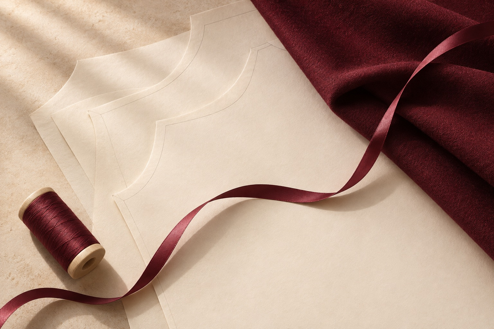

АВТОМАТИЗАЦИЯ ДЛЯ БРЕНДОВ ОДЕЖДЫ
За красивым
брендом работающая
система.
Связываем продажи, товарный учёт и внутренние процессы. Чтобы ваш бренд рос без такого же роста ручной работы.
Начнём с вашей задачи. 2 часа работы в подарок ↗
ОТ ВЕЩИ К СИСТЕМЕMS · 01

ЗАКАЗ ПОЛУЧЕНСвитер · бургундиРазмер MСайт → CRM
✓Товар в резервеРазмер и заказ связаны
Товар → заказ → результатИллюстрация процесса
ОДИН ПРОЦЕСС ВМЕСТО РУЧНЫХ ПЕРЕНОСОВСайт↗Шоурум↗Маркетплейсы↗Производство
01 · СВЯЗАННЫЕ ПРОЦЕССЫКаждый шаг на своём месте
Вещей становится больше.
Рутина не должна.
Размеры, цвета, остатки, отложки и возвраты. Учитываем специфику одежды и соединяем отдельные действия в понятную последовательность.
ПУТЬ ОДНОГО ЗАКАЗА01 · 05
ДЕМОНСТРАЦИОННЫЙ ПРИМЕРСвитер из шерсти
Бургунди · Размер M
ИсточникИнтернет-магазин
ТоварОдна модель, нужный размер
Иллюстрация возможного процесса.
Правила и связи проектируем под ваш бренд.
02 · ИЗ ПРАКТИКИРеальные решения · обезличенные данные
Не просто расскажем.
Покажем внутри.
Рабочие интерфейсы для разных брендов одежды. От заявки в шоуруме до экономики изделия.
РАБОЧЕЕ МЕСТО КОНСУЛЬТАНТАБренд 01Заявки ●
Все заявкиПродажиОтложки
ТОВАРРАЗМЕРЭТАП
СвитерMВ резерве
ПальтоSОплачен
ЖакетLК выдаче
amoCRM↔МойСклад
Заявка. Товар. Оплата.В одном окне.
Схематичное превью · ниже доступен оригинальный интерфейс БРЕНД 01 · ПРОДАЖИ И КОММУНИКАЦИИВсё для продажи.
Без переключений.
- Задача
- Связать заявки, товар, отложки и оплату в работе консультанта.
- Решение
- Объединили amoCRM и МойСклад в кассе. Добавили аренду, сертификаты и управление автоматическими сообщениями.
ОТ ПРОДАЖ К РЕШЕНИЯМБренд 02Аналитика ●
ПродажиТоварыКлиенты
КаналыКатегорииПериод
Общая картина.До деталей.
Иллюстративный график, не показатели клиента БРЕНД 02 · АНАЛИТИКА И ЭКОНОМИКАРазобраться в цифрах.
Без сборки отчёта.
- Задача
- Рассматривать продажи, каналы, товары и клиентов в общей системе координат.
- Решение
- Панель на данных МоегоСклада и amoCRM с общими фильтрами. Для производства разработан интерфейс норм и расчёта себестоимости.

ОТ МОДЕЛИ К ПАРТИИКАТАЛОГ → КРОЙОдна модель.
Все её размеры.XSSMLXL
Предметная иллюстрация производстваБРЕНД 03 · КАТАЛОГ И КРОЙОт остатков по размерам
к заданию на крой.
- Задача
- Связать модели, цвета, размеры и остатки с планированием партии.
- Решение
- Приложение с каталогом и заданиями на крой. В задании видны план, раскладки и фактический выпуск.
СВОИ ПРАВИЛА ЛОЯЛЬНОСТИBRAND · MEMBERS✳
Повод
вернуться.БОНУСЫ ВНУТРИ МОЕГОСКЛАДА Иллюстрация программы, не карта реального клиента БРЕНД 04 · ПРОГРАММА ЛОЯЛЬНОСТИВаши правила.
В привычной системе.
- Задача
- Управлять бонусами в заказе и карточке покупателя, без отдельной подписки на сервис лояльности.
- Решение
- Уровни, начисление и списание, сроки активации и сгорания. Возвраты корректируют бонусы, история сохраняется.
Проверка баланса и защита от повторных начислений встроены в процесс.
Обсудить похожую задачу ↗
01 · 04 · Продажи и коммуникации
03 · ОСМЫСЛЕННАЯ АРХИТЕКТУРАСначала процесс. Затем инструменты.
Не больше программ.
Больше связи.
Готовый сервис там, где его достаточно.
Свой код там, где он оправдан.
Проверяю, за что вы платите и какие функции используете. Сравниваю варианты с учётом разработки и дальнейшего сопровождения.
01Оставить нужноеПрограммы, которые решают свою задачу.
02Связать разрозненноеДанные и действия между системами.
03Разработать недостающееИнструмент под ваш рабочий процесс.
Стоимость и дальнейшие расходы согласуем после разбора задачи.

МАКСИМ ШЛЫКОВMS PRODUCT ↗
04 · ЧЕЛОВЕК ЗА СИСТЕМОЙЛично разбираюсь.
Лично отвечаю.
Я Максим. Проектирую автоматизацию продаж и товарного учёта для брендов одежды.
Разбираю вашу задачу, связываю amoCRM, МойСклад и собственный код. Проверяю решение на рабочих сценариях и помогаю команде им пользоваться.
Написать мне напрямую ↗
Результат можно проверить.
01 · ДО РАБОТЫСогласуем результат
Фиксируем задачу, состав работ и критерии готовности.
02 · ПЕРЕД ПЕРЕДАЧЕЙПройдём сценарий
Проверяем нужную цепочку и сверяем данные между системами.
03 · В КОМАНДЕНаучим пользоваться
Показываем работу, даём инструкции. Сопровождение согласуем отдельно.